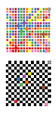

Covering¶
Covering problems in graphs are about finding substructures in a graph to which all other elements of the graph are adjacent. For example, in a vertex cover we look for a subset of the vertex set containing at least one end-point of each edge and hence covering all edges.
Dominating set¶
A dominating set in a graph \(G = (V, E)\) is a subset \(S \subset V\) of the vertex set such that each vertex \(v \in V\) is connected to a vertex \(s \in S\) by an edge \(\{s,v\} \in E\).
A minimum dominating set (red vertices) of the Petersen graph.
Create an ILP for the minimum dominating set problem |
|
Get a list of edges comprising a dominating set |
Edge dominating set¶
An edge dominating set in a graph \(G = (V, E)\) is a subset \(S \subseteq E\) of the edge set such that each edge in \(E\) is adjacent to an edge in \(S\).

Create an ILP for the minimum edge dominating set problem |
|
Get a list of edges comprising an edge dominating set |
Vertex cover¶
A vertex cover in a graph \(G = (V, E)\) is a subset \(S \subset V\) of the vertex set such that for each edge \(\{u, v\} \in E\) at least one of its vertices is in \(S\): \(\{u,v\} \cap S \neq \emptyset\).

Create an ILP for the minimum vertex cover problem |
|
Get a list of vertices comprising a vertex cover |
Heuristics¶
The methods in this section provide approximate solutions to the vertex cover problem constituting admissible solutions from which to start the exact optimisation.
Approximate solution to the minimum vertex cover problem via maximal matching heuristic |
Approximate solution to the minimum vertex cover problem via LP rounding |
Knapsack¶
In the multi-dimensional knapsack problem the goal is to pack items with the highest total value into a knapsack where each item has a multi-dimensional weight vector and the knapsack has an individual capacity that cannot be exceeded in each dimension of the weight vector.
Create an ILP for the multi-dimensional knapsack problem |
|
Get a list of items contained in the solution. |
k-Cover¶
In the k-cover problem, the elements of the universe of a set system are to be covered by at most k sets of the system. The objective is then to maximise the total weight of the elements that are covered.
Greate an ILP for the k-cover problem |
|
Get a list of sets comprising the k-cover |
Set cover¶
The set cover problem is to find the smallest weight sub-collection of the sets in a set system such that all elements of the underlying universe are covered.
Greate an ILP for the set cover problem |
|
Get a list of sets comprising a set cover |
Heuristics¶
The methods in this section provide approximate solutions to the set cover problem constituting admissible solutions from which to start the exact optimisation.
Greedy heuristic for the set cover problem |
Details¶
-
graphilp.covering.min_dom_set.create_model(G)¶ Create an ILP for the minimum dominating set problem
- Parameters
G – an
ILPGraph- Returns
- ILP:
- \begin{align*} \min \sum_{v\in V}~x_v\\ \text{s.t.}&&\\ \forall v \in V:& \sum_{a\in \bigcup_{v\in e} e } x_a \geq 1 & \text{(each node is covered by a neighbour)} \end{align*}
- Example:
 Find how many queens are needed to cover all squares on an \(n\times n\) chessboard.
-
graphilp.covering.min_dom_set.extract_solution(G, model)¶ Get a list of edges comprising a dominating set
- Parameters
G – an
ILPGraphmodel – a solved Gurobi model for minimum dominating set
- Returns
a list of nodes comprising a minimum dominating set
-
graphilp.covering.min_edge_dom.create_model(G)¶ Create an ILP for the minimum edge dominating set problem
- Parameters
G – an
ILPGraph- Returns
- ILP:
- \begin{align*} \min \sum_{e\in E}x_e\\ \text{s.t.}&&\\ \forall e \in E:& \sum_{a\in E ~:~e\cap a \neq \emptyset } x_a \geq 1 & \text{(each edge must be covered by an adjacent one)} \\ \end{align*}
-
graphilp.covering.min_edge_dom.extract_solution(G, model)¶ Get a list of edges comprising an edge dominating set
- Parameters
G – an
ILPGraphmodel – a solved Gurobi model for minimum edge dominating set
- Returns
a list of edges comprising a minimum edge dominating set
-
graphilp.covering.min_vertexcover.create_model(G, weight='weight', warmstart=[])¶ Create an ILP for the minimum vertex cover problem
- Parameters
G – a weighted
ILPGraphweight – name of the weight parameter in the node dictionary of the graph
warmstart – a list of vertices forming a vertex cover of G
- Returns
- ILP:
- \begin{align*} \min \sum_{v\in V} w_v x_v\\ \text{s.t.}&&\\ \forall \{k,j\} \in E: & x_k + x_j \geq 1 & \text{(at least one vertex in each edge is covered)} \end{align*}
-
graphilp.covering.min_vertexcover.extract_solution(G, model)¶ Get a list of vertices comprising a vertex cover
- Parameters
G – an
ILPGraphmodel – a solved Gurobi model for minimum vertex cover
- Returns
list of vertices of minimum vertex cover
-
graphilp.covering.heuristics.vertexcover_maximal_matching.get_heuristic(G)¶ Approximate solution to the minimum vertex cover problem via maximal matching heuristic
This heuristic successively chooses an edge in the graph, adds its vertices to the vertex cover and then deletes all edges adjacent to these vertices because they are already covered.
- Parameters
G – an
ILPGraph- Returns
a list of vertices forming a vertex cover of G
-
graphilp.covering.heuristics.vertexcover_lp_rounding.get_heuristic(G)¶ Approximate solution to the minimum vertex cover problem via LP rounding
- Parameters
G – an
ILPGraph- Returns
a list of vertices forming a vertex cover of G
- LP:
The following LP with continuous node variables is rounded to obtain an approximation.
\begin{align*} \min \sum_{v\in V} x_v\\ \text{s.t.}&&\\ \forall \{u, v\} \in E: x_u + x_v \geq 1 && \text{(at least one vertex in each edge is covered)}\\ \forall v \in V: & x_v \geq 0\\ \forall v \in V: & x_v \leq 1\\ \end{align*}
-
graphilp.covering.knapsack.create_model(S, W)¶ Create an ILP for the multi-dimensional knapsack problem
- Parameters
S – a weighted
ILPSetSystem.W – capacity of each knapsack
- Returns
- ILP:
Let \(M\) be the incidence matrix of the set system, \(w\) the vector of weights giving the value of the items to be packed and \(x\) a vector indicating which item is selected.
\begin{align*} \max w^{\top}x \\ \text{s.t.} &&\\ Mx \leq W && \text{(do not exceed capacity in any dimension)}\\ \end{align*}
-
graphilp.covering.knapsack.extract_solution(S, model)¶ Get a list of items contained in the solution.
- Parameters
S – a weighted
ILPSetSystemmodel – a solved Gurobi model for the knapsack problem
- Returns
list of items contained in the knapsack solution
-
graphilp.covering.k_cover.create_model(S, k, warmstart=[])¶ Greate an ILP for the k-cover problem
- Parameters
S – a weighted
ILPSetSystemk – maximal number of sets in solution
warmstart – a list of sets forming a cover
- Returns
- ILP:
Let \(S\) be the collection of sets in the set system, \(U\) the underlying universe, and \(w_u\) the weight of each element \(u \in U\). For each \(s \in S\), the decision variable \(x_s\) indicates whether \(s\) is part of the solution. For each \(u \in U\), the decision variable \(y_u\) indicates whether \(u\) is covered in the solution.
\begin{align*} \max \sum_{u \in U} w_u y_u \\ \text{s.t.} &&\\ \forall u \in U: \sum_{s:u \in s}x_{s} \geq y_u && \text{(chosen sets cover elements of the universe)}\\ \sum_{s \in S} x_{s} \leq k && \text{(use at most k sets)}\\ \end{align*}
-
graphilp.covering.k_cover.extract_solution(S, model)¶ Get a list of sets comprising the k-cover
- Parameters
S – a weighted
ILPSetSystemmodel – a solved Gurobi model for k coverage
- Returns
list of sets contained in the solution of the k-cover
-
graphilp.covering.set_cover.create_model(S, warmstart=[])¶ Greate an ILP for the set cover problem
- Parameters
S – a weighted
ILPSetSystemwarmstart – a list of sets forming a cover
- Returns
- ILP:
Let \(S\) be the collection of sets in the set system, \(U\) the underlying universe, and \(w_s\) the weight of set \(s \in S\).
\begin{align*} \min \sum_{s \in S} w_{s} x_{s} \\ \text{s.t.} &&\\ \forall u \in U: \sum_{s:u \in s}x_{s} \geq 1 && \text{(cover every element of the universe)}\\ \forall s \in S: x_{s} \in \{0,1\} && \text{(every set is either in the set cover or not)}\\ \end{align*}
-
graphilp.covering.set_cover.extract_solution(S, model)¶ Get a list of sets comprising a set cover
- Parameters
S – a weighted
ILPSetSystemmodel – a solved Gurobi model for weighted set cover
- Returns
sets of the optimal set cover solution
-
graphilp.covering.heuristics.setcover_greedy.get_heuristic(S, k=None)¶ Greedy heuristic for the set cover problem
If paramter k is specified, the problem turns into a k-cover problem. In this case, the heuristic greedily approximates the maximal number of vertices that can be covered with at most k sets otherwise there is no limit on the number of sets.
- Parameters
S – a weighted
ILPSetSystemk – maximal number of sets to use
- Returns
a list of sets approximating the set cover problem